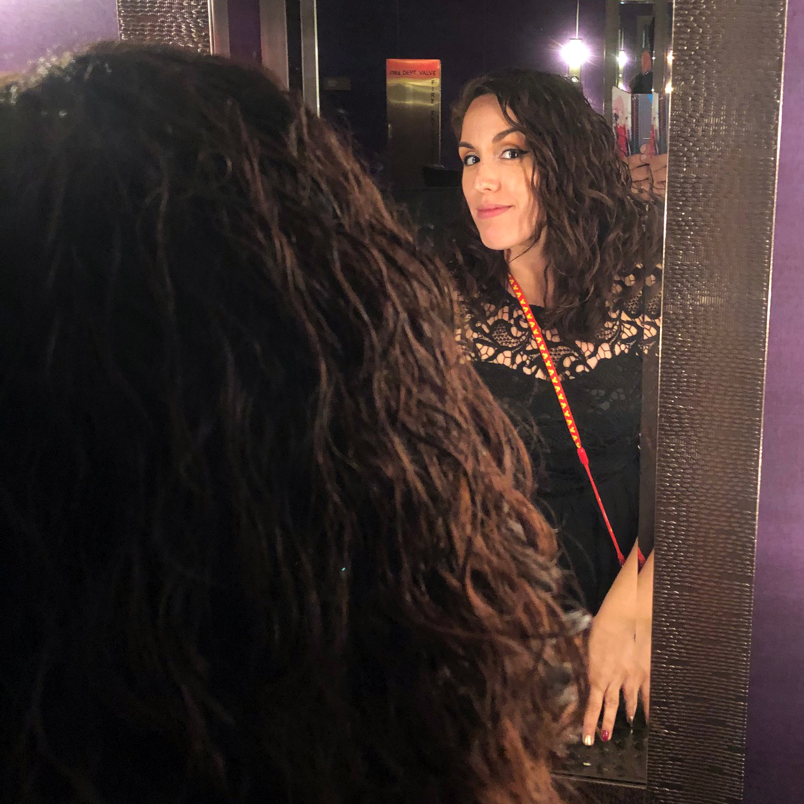

About Me

Hello, and welcome to my TED Talk. My name is Bessy Grisell Martinez (née Morales). I was born in Hialeah Hospital, FL, raised in Little Hialeah (aka Westchester), moved to Kendall when I was about 15 years old, and lived there until I was about 28 years old. I got married two years ago and have been living in the beautiful badlands of Hialeah for about 4 years. It's as horrible and wonderful as you think it is.
Work-wise, I got my degree in Graphic/Commercial Design and worked in the field for about 2 years. The company I worked for at that time relocated to New York, and I was a mere 18-year-old with no life experience and high anxiety, so I did not relocate with them. Subsequently, I fell into different jobs in the years to come. I was an office/data clerk, administrative assistant, paralegal, accounting clerk, and office manager. Now I'm looking for a new and exciting profession where I can continue to grow and learn from. I taught myself HTML and CSS when I was 16, but the technology has advanced so much since then that I'm learning how to crawl again.
Other than that, I love movies, music, books, musical theater/movies, good podcasts, anime, and cosplay. I try to keep active and work out 5 times a week, for at least 30 minutes or so. I'm also a big Food Network junkie. And for the record, WHAT DID GUY FIERI EVER DO TO YOU?? LEAVE HIM ALONE! He's a national treasure. A gem.
See you on the other side of Flavortown. Peace.